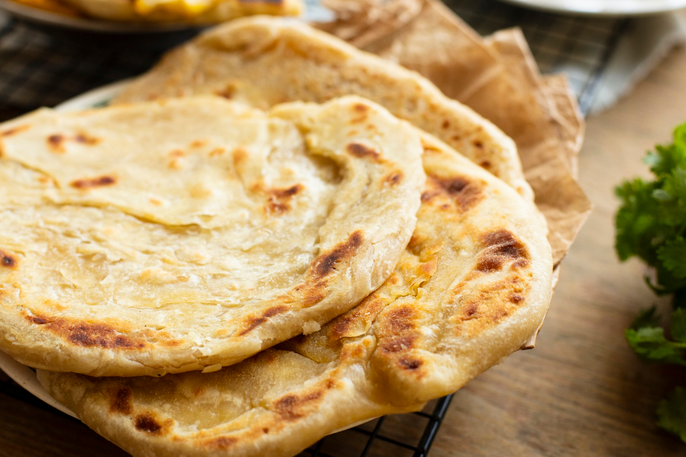
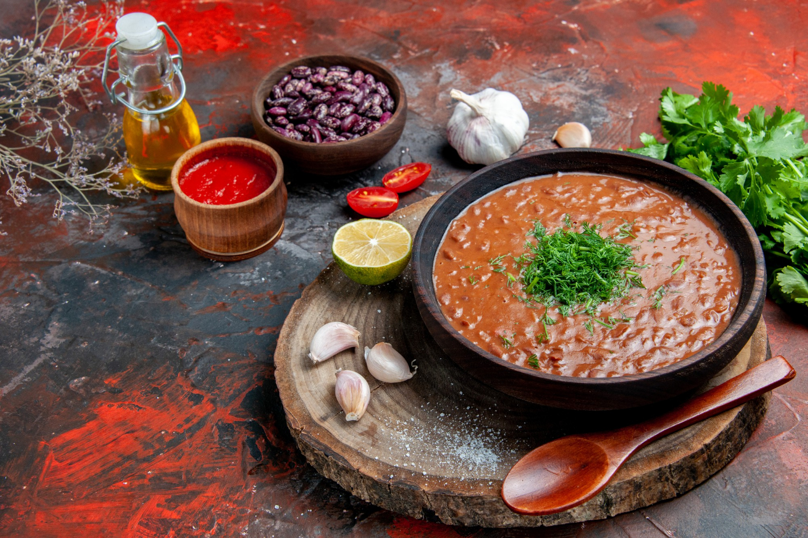
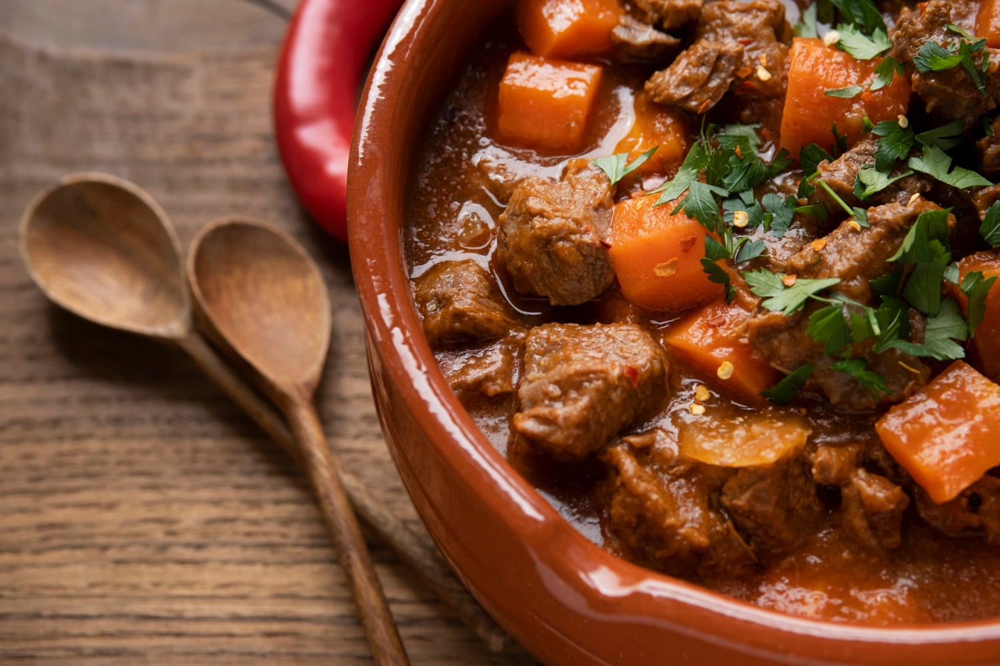

SETH'S ODIN RECIPES
Ugandan Chapatti
- An anytime meal for breakfast lunch or dinner
- Served with bean gravy, beef stew, rice or tea.
- Common around E.Africa but widely adopted.

The Delicious African Beans
- A rich source of healthy plant based protein.
- Served with rice, ugali, sweet potatoes, Kalo.
- A global cuisine, loved and consumed by many.

Delicious Beef Stew
- A mouth watering, rich source of animal based protein.
- Served with rice, ugali, chapatti, among others.
- Diverse preparation methods used based on locality.
